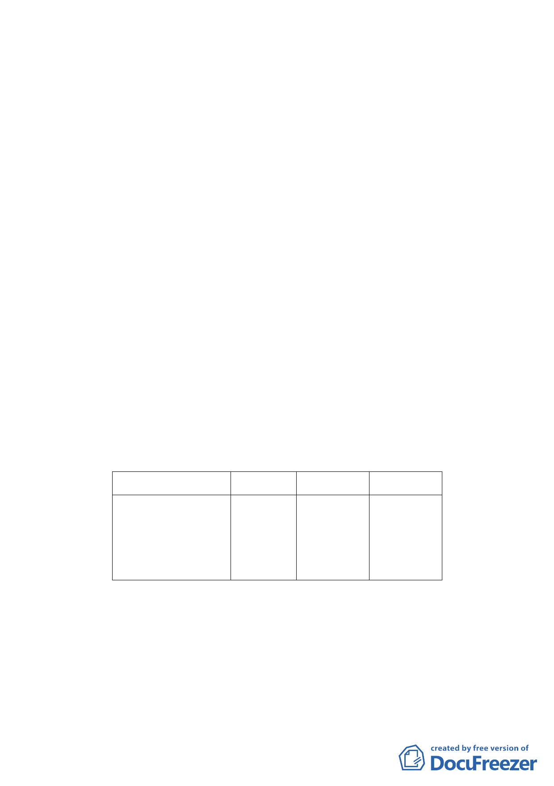

計畫範圍西側為臺北市政府消防局第二大隊，東側則有臺
北市松山區地政事務所、信義國民中學。距計畫範圍1000
公尺範圍內計有7處學校(4處國小、2處國中、1處大學)、7
處公園。本案位於信義計畫區範圍內，該區公園、體育場
所、綠地、廣場及兒童遊樂場加總面積達23.92%。
四、 計畫目標與構想：
（一） 活化土地使用效益
臺北市瑠公農田水利會文化館設置因評估新店地區環境及
歷史背景條件皆優於信義計畫區，已於新店地區興建，原
社教用地已無需求。水利會持有土地以永續經營原則，採
變更為住商混合區並朝商用不動產經營。
（二） 配合中央及地區觀光政策，朝旅館使用開發
近年政府不斷積極發展觀光產業，加上來臺旅客逐年成長
所衍生的住宿需求，使得臺北市旅館市場仍有發展空間；
本案朝旅館使用方向進行調整，呼應地區產業發展及國家
發展觀光政策。
五、 變更細部計畫內容概述：（詳計畫書）
（一） 變更土地使用分區
本案為活化土地使用效益、配合中央及地區發展觀光政
策，透過本計畫變更為住商混合區。
位置
原計畫 新計畫 面積（㎡）
臺北市信義區松
智路及莊敬路
391巷11弄交叉
口北側
社教用
地
住商混合
區
5,529
（二） 土地使用分區管制
本案除下列規定外，其餘依民國89年8月25日公告「修訂臺
北市信義計畫地區細部計畫(第二次通盤檢討)暨配合修訂
主要計畫案」、臺北市土地使用分區管制自治條例及其他
相關法令規定辦理。
1. 使用強度：建蔽率40%、容積率200%。
- 78 -